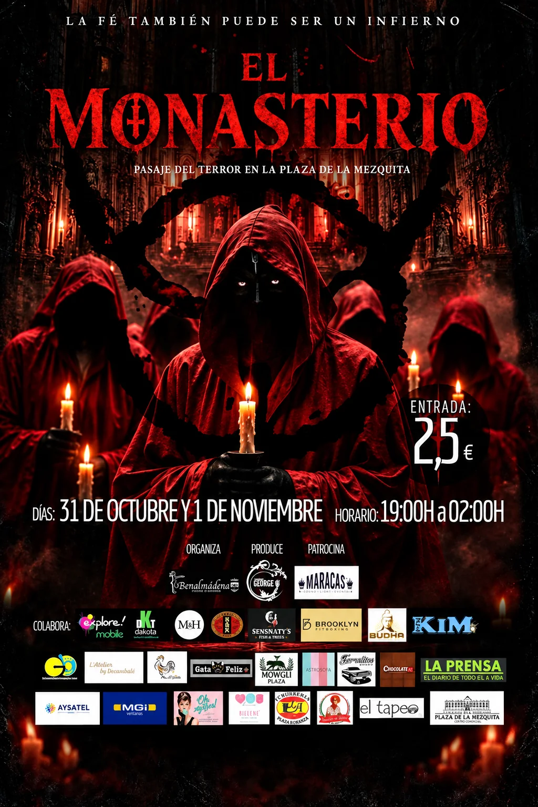
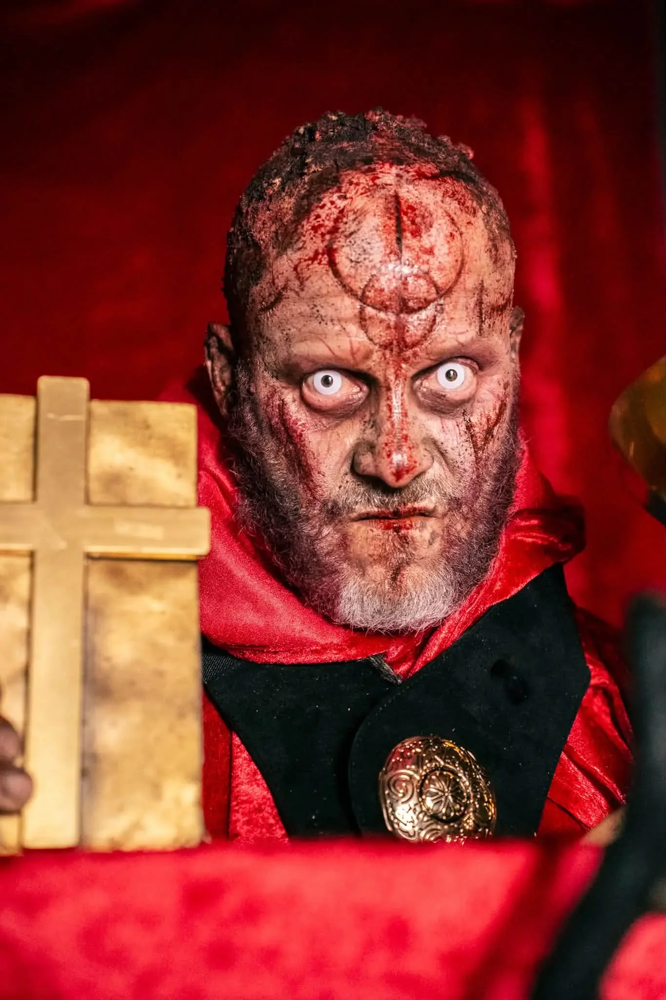
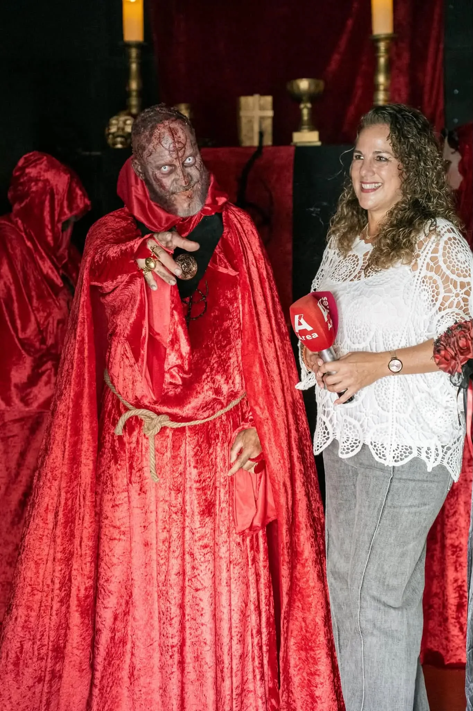
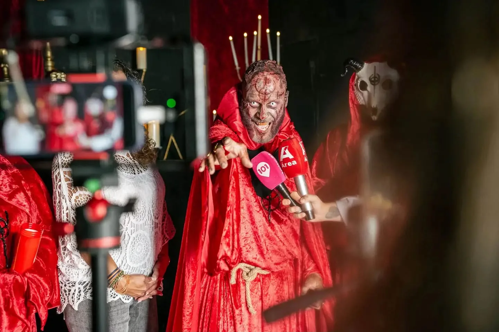
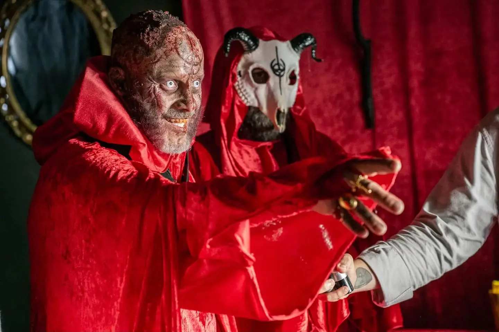
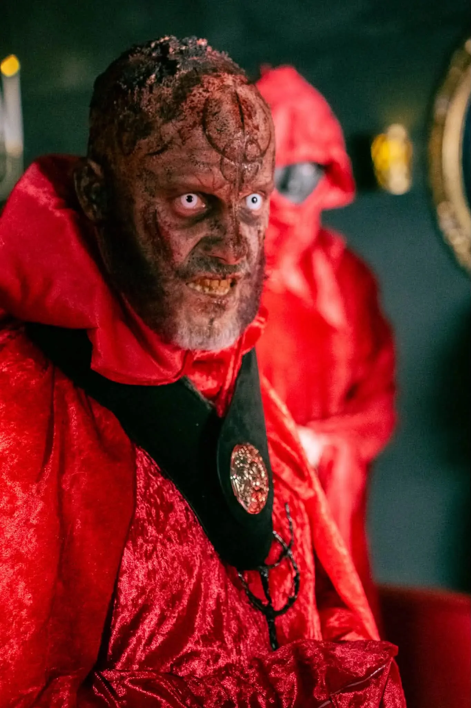
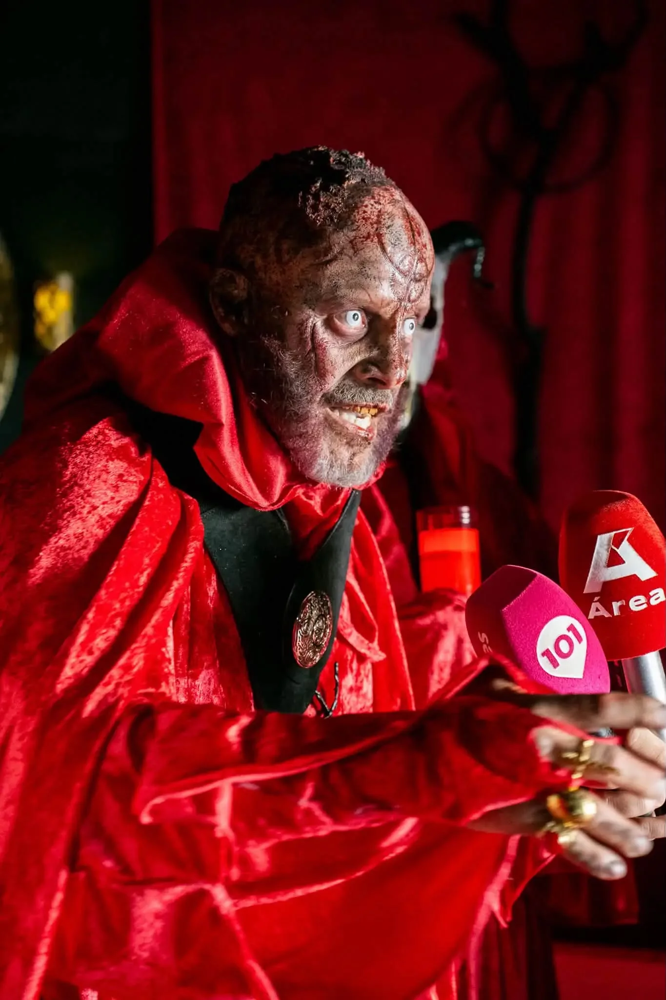

El Monasterio:
pasaje del terror
La Plaza de la Mezquita se transforma para recibir El Monasterio, una propuesta de Halloween en Arroyo de la Miel. Consulta el cartel, descubre la invitación en vídeo y conoce los datos para visitarlo.

Halloween en la Plaza de la Mezquita
El Monasterio es el pasaje del terror anunciado para Halloween 2026 en Arroyo de la Miel, Benalmádena. La propuesta se presenta con una estética de misterio y terror, personajes caracterizados y una invitación que desvela poco a poco el lugar y las fechas.
La cita será el 31 de octubre y el 1 de noviembre, de 19:00 a 02:00. La entrada indicada en el cartel es de 2,50 €.
Abre la invitación
Una carta sellada aparece en un monasterio iluminado por velas y calabazas. Al desplegarse, revela el nombre del pasaje, la Plaza de la Mezquita y las fechas de Halloween en Arroyo de la Miel.
Reproduce el vídeo vertical aquí y comparte la invitación con quien quiera vivir la noche de El Monasterio.
El ambiente de El Monasterio
Imágenes de Jorge caracterizado y de la presentación del pasaje a medios y asistentes. Pulsa una foto para verla a tamaño completo.





